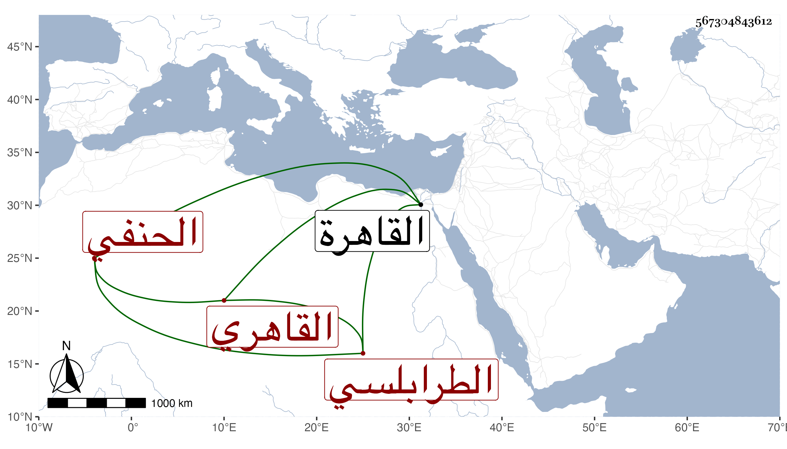

0902Sakhawi.DawLamic.ITO20230111-ara1.EIS1600.567304843612
Biography ID: 567304843612
60
محمد بن عبد الرحيم بن محمد بن أحمد بن أبي بكر بن صديق المعين أبو الخير بن التاج أبي الفضل بن الشمس الطرابلسي القاهري الحنفي الماضي أبوه وجده والآتي ابنه محمد ويعرف كسلفه بابن الطرابلسي . ولد في ذي القعدة سنة اثنتي عشرة وثمانمائة بالقاهرة ونشأ بها فحفظ القرآن والمختار والمنار وغيرها ، وعرض على جماعة وقرأ في الفقه على التفهني والعيني والعز عبد السلام البغدادي وعليه قرأ في الأصول أيضا وكذا اشتغل في النحو عليه وعلى الحناوي وسمع على الشرف ابن الكويك والشمس الشامي في آخرين ، وأجاز له جماعة وناب في بعض البلاد عن شيخنا ثم بالقاهرة عن التفهني فمن بعده وحج غير مرة آخرها مع الرجبية سنة إحدى وسبعين ، واستقر في تدريس العاشورية عوضا عن أبيه وفي تدريس الأزكوجية بسوق أمير الجيوش عوضا عن ابن عمه ظهير الدين بل ناب عنه في تدريس جامع طولون ولم يكن في عداد المدرسين ولا كان محمودا في قضائه وغيره وقد صحب الزين الاستادار وقتا وعاونه في حل أوقافه من كتب وغيرها واختص بالاستبدالات وقتا ، وقيل إنه لما عاد من الحج أول سنة اثنتين وسبعين تنزه عن تعاطي الأحكام ولزم الصوم والبادة إلى أن مرض أسبوعا ثم مات في الطاعون ليلة الأربعاء رابع رجب سنة ثلاث وسبعين بعد أن كتب على الاستدعاآت وربما حدث ودفن بتربة سعيد السعداء عفا الله عنه .
